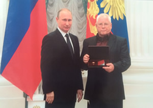

Указом Президента Российской Федерации от 6 июля 2013 года № 608 о награждении государственными наградами Российской Федерации за большие заслуги в области изобразительного искусства присвоено почетное звание Народный художник Российской Федерации Теплову Валерию Васильевичу – художнику, члену Ярославского областного отделения Всероссийской творческой общественной организации «Союз художников России».
Валерий Васильевич Теплов является постоянным участником всех региональных, республиканских и всесоюзных выставок. С 1999 года по 2009 год член Ревизионной комиссии ВТОО Союза художников России.
В 1999 г. В.В. Теплов за творческие достижения стал лауреатом Областной премии им А.М. Опекушина, а 2005 году стал лауреатом премии Центрального Федерального округа в области литературы и искусства. В 2010 награжден золотым знаком ВТОО «Союз художников России». Имеет дипломы Министерства культуры РФ (2001), ВТОО Союза художников России (1993, 1999, 2003).
Произведения находятся в собрании Ярославского художественного музея, Музея пейзажа им. И. Левитана (Плес), во многих российских и зарубежных частных коллекциях.
 |